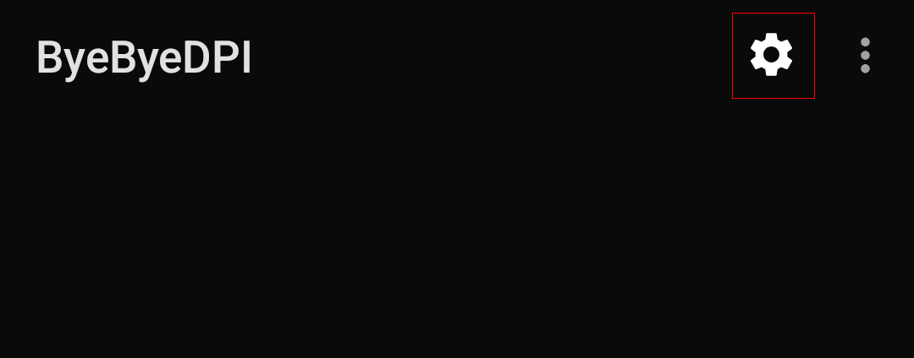
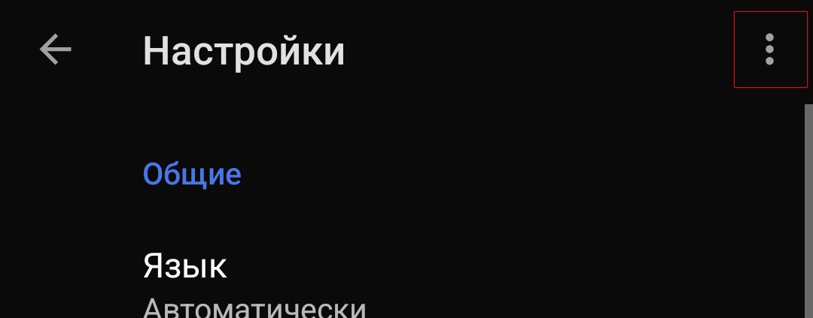
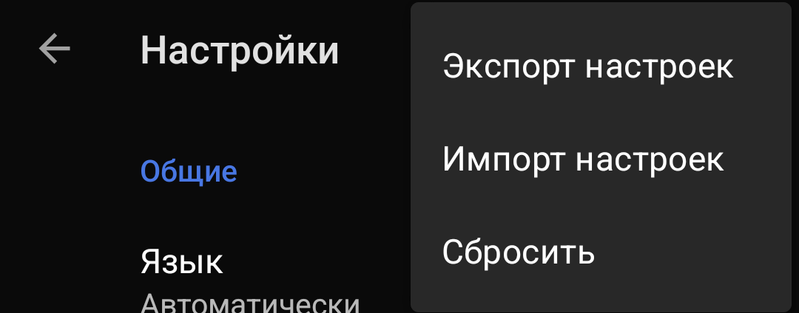

GoodbyeDPI-UI обработает и применит настройки из BBD-совместимого JSON файла.
Несовместимые с Windows настройки ByeDPI будут автоматически удалены.
Показать список совместимых параметров.
Функция позволяет переносить настройки запуска из Android-приложения ByeByeDPI (Далее - BBD) в настольное приложение GoodbyeDPI-UI. Перенос осуществляется посредством импорта/экспорта JSON файла с настройками
GoodbyeDPI-UI обработает и применит настройки из BBD-совместимого JSON файла.
Несовместимые с Windows настройки ByeDPI будут автоматически удалены.
Показать список совместимых параметров.
GoodbyeDPI-UI сохранит данные текущего пресета в BBD-совместимый JSON файл. Вам будет предложены действия - "Сохранить в файл" и "Поделиться или отправить на устройство". Выбор первого варианта вызовет диалог сохранения файла, а второго вызовет системное меню "Поделиться"
Откройте настройки BBD

В настройках нажмите "Подробности"

Выберите необходимое действие - Экспортировать или импортировать
